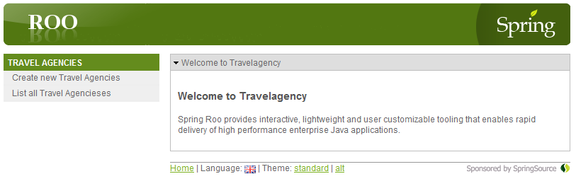

Tutorial
The best way to learn about Roo and our addon is to try it out. To provide you some guidance in this process, we prepared the following tutorial. Following this tutorial, you will learn how to make use of the addon in order to create a Roo-generated application connected to a NetWeaver Gateway system.
In order to follow the tutorial, please make sure that you already have installed Roo as well as downloaded and installed our addon. Please refer to Setting up Roo and addons for instructions on how to do the initial setup.
We strongly recommend to pursue first the tutorial provided by the SAP HANA Cloud Addon.
Get your hands dirty - starting the tutorial
What we will do in the following is to create a small web application which will read data from a NetWeaver Gateway service.
For that, first we need such a service. For demonstration purposes, have a look at the freely available NetWeaver Gateway demo system on SAP Community Network. Let's choose the flight demo service for instance. You can view the consumption model exposed by this service from your browser, by going to this link (the login credentials are mentioned on the above-specified SCN page). Remember that NetWeaver Gateway can be configured to expose services through the OData protocol, which we are going to use.
To get started with our web application, we open the commandline and create a new, empty folder named gwdemo. We then move into this folder and start Roo. If you are using Windows, you need to execute the following commands:
c:\>mkdir gwdemo
c:\>cd gwdemo
c:\gwdemo>roo
____ ____ ____
/ __ \/ __ \/ __ \
/ /_/ / / / / / / /
/ _, _/ /_/ / /_/ /
/_/ |_|\____/\____/ X.Y.Z.RELEASE [rev abcdef0]
Welcome to Spring Roo. For assistance press TAB or type "hint" then hit ENTER.
roo>Setting up the project
Now that we have the Roo shell up and running, issue the following commands to do the initial setup of our web project:
project --topLevelPackage com.sap.research --projectName travelagency
persistence setup --provider ECLIPSELINK --database HYPERSONIC_IN_MEMORYThe first command tells Roo to setup a project named travelagency having the top level package com.sap.research for our java classes.
The second command sets up the kind of persistency we want to use to store our data. The first parameter tells Roo to use Eclipse Link as JPA provider. For compatibility reasons, in case you plan to to deploy later on your application to HANA Cloud, we use Eclipse Link. The second parameter specifies that we want to use a HSQLDB that stores data just in memory. This is great for local testing, as we do not need to setup a database server.
Ok, but why do we need to set up persistency? The idea was to use the NetWeaver Gateway service as data provider, right? Right. However, since Spring Roo’s generated applications rely on JPA persistency (any entity created in Spring Roo is actually a JPA-entity), one should issue the persistency setup commands before running any NetWeaver Gateway connectivity commands. This will also prove extremely useful if we want to extend the entities exposed by a Gateway system with custom attributes.
Setting up NetWeaver Gateway connectivity
Now the real fun starts. Issue the following commands:
gateway setup
gateway define odata_endpoint --Name sampleFlight --URL https://gw.esworkplace.sap.com/sap/opu/odata/IWBEP/RMTSAMPLEFLIGHT_2/ --USER GW@ESW --PASSWORD ESW4GW --HTTP_PROXYHOST proxy --HTTP_PROXYPORT 8080 --CSRF_MODE standard --TIMEOUT_CALL 30
Unfortunately, the sample Gateway services on SCN were shut down starting with April 1st. A replacement demo service will be provided soon. Until then, we kindly ask you to use other OData endpoints for testing.
Let's see what we did. The gateway setup command is the first command provided by our addon. It instructs Roo to add the relevant dependencies in the pom.xml file of our project, and a class that will handle connectivity to the NetWeaver Gateway services. If you are curious what's going on "under the hood", then open:
- the pom.xml and search for odata4j. The found dependencies were added by our command.
- the folder
src\main\java\com\sap\research\connectivityand check the ODataConnectivity.java file.
The second command is a bit more complex, and basically it defines the connectivity parameters necessary to connect to the flight demo service. We can refer later on to this connection simply by the value entered for the --Name parameter, which in our case is "sampleFlight". We will call it a "namespace".
Ok, ok, but how is this actually working? Well, do you remember setting up the addon? There was a .jar file which needed to reside in the user's home directory. This .jar file is the star of the current step. It connects to the provided service and downloads metadata information in an XML file, which will represent the main point for configuration of entities later on.
The parameters are self-explanatory, except perhaps the last two ones (which are not mandatory, but we have included them for exemplification):
--CSRF_MODE. In order to be able to perform create or update operations, NetWeaver Gateway makes use of CSRF. The allowed values are "standard" and "compatibility", depending on the configuration of the NetWeaver Gateway service to which we connect to. If not specified, "standard" is used.--TIMEOUT_CALL. This parameter represents the time in seconds for allowing the auxiliary.jarto run. By default, the value is 30.
I think you got by now what our code is generating, but if you can't help yourself, just have a look in the src\main\java\com\sap\research\connectivity folder and check the sampleFlight_metadata.xml and sampleFlight.java files.
Defining a connected entity
Boy, are we done setting up stuff? Yep. Let's play a bit with tab-completion. Issue the following and then press TAB.
gateway entityTwo options should be available, --namespace and --remoteEntitySet. Choose the first one and then press TAB once again. Since there is only one namespace defined, it will automatically be completed, so you should get something like:
gateway entity --namespace sampleFlightNow, choose the next option and press TAB. Your Roo shell should have issued something like:
roo> gateway entity --namespace sampleFlight --remoteEntitySet
BookingCollection CarrierCollection FlightCollection NextMonthFlights NotificationCollection
SubscriptionCollection TravelAgencies TravelAgencyCollection
roo> gateway entity --namespace sampleFlight --remoteEntitySetThese are all the entity sets exposed by the specified NetWeaver Gateway service. Choose "TravelAgencies". In the end, the entire command should look like:
gateway entity --namespace sampleFlight --remoteEntitySet TravelAgenciesThere is one more option, but it is not mandatory. This option called --import_all, lets you specify whether all the fields contained within the selected entity set should be imported. By default is "true", but if you set it to "false", then only the keys will be imported. In this case you will have to import the rest of the fields later on. If you want to leave it on "true", then press ENTER and skip the next section of the tutorial. You can directly create the UI. Otherwise, set the command as follows and keep on reading:
gateway entity --namespace sampleFlight --remoteEntitySet TravelAgencies --import_all falseWhat our command does, is to create a java class, a Roo-entity, which contains the methods necessary for CRUD operations. You can check it out by going to the src\main\java\com\sap\research\domain folder and opening the TravelAgencies.java file.
Adding fields
If you have specified --import_all false, then keep on reading, as we must manually import the fields. Otherwise, you can skip this section.
Enjoyed playing with tab-completion? Let's do some more. Type the following and press TAB.
gateway fieldThere are two options available, --entityClass and --fieldName. It is of uttermost importance to initially specify the --entityClass option, which represents the entity for which we intend to import the field. After you do that, you guessed it, press TAB once again. You should get:
gateway field --entityClass TravelAgenciesThe option was autocompleted, as there is only one entity available. Now choose the second option and press TAB. The Roo shell should look something like:
roo> gateway field --entityClass TravelAgencies --fieldName
City Country LanguageCode LocalCurrencyCode MimeType Name POBox
PostalCode Region Street TelephoneNumber URL
roo> gateway field --entityClass TravelAgencies --fieldNameWhat you see here are all the fields that can be imported within the selected entity. Select one of them, say City, then press ENTER. If you have an informative line in the Roo shell saying that the file TravelAgencies.java was updated, then the field was successfully imported. You can do the same with the rest of the fields, or only with the ones that you want.
Please be sure to check the configuration of the NetWeaver Gateway before deciding to import only a limited set of fields. There might be the case that some fields are required, either by the implemented business logic, or by the underlying backend, or by the Gateway itself.
In the end you should have issued these commands:
gateway field --entityClass TravelAgencies --fieldName City
gateway field --entityClass TravelAgencies --fieldName Country
gateway field --entityClass TravelAgencies --fieldName LanguageCode
gateway field --entityClass TravelAgencies --fieldName LocalCurrencyCode
gateway field --entityClass TravelAgencies --fieldName MimeType
gateway field --entityClass TravelAgencies --fieldName Name
gateway field --entityClass TravelAgencies --fieldName POBox
gateway field --entityClass TravelAgencies --fieldName PostalCode
gateway field --entityClass TravelAgencies --fieldName Region
gateway field --entityClass TravelAgencies --fieldName Street
gateway field --entityClass TravelAgencies --fieldName TelephoneNumber
gateway field --entityClass TravelAgencies --fieldName URLYou may want to have a look again at the TravelAgencies.java file found in the src\main\java\com\sap\research\domain folder.
Anyway, we are done with our addon-specific commands, the rest will be handled by native Roo commands.
Adding Local Fields
In case we need to have information stored only locally (for whatever reason), but within a connected entity, there is the possibility of adding such fields. Let's try adding a description field:
gateway local field --entityClass TravelAgencies --fieldName AgencyDescription --fieldType java.lang.StringThere you have it! A local text field has been created within our Gateway connected entity. The value entered in this field will be saved only in the local persistence layer.
Creating the web UI
Let's instruct Roo to create a web UI for us. We do this, by issuing just two commands on the Roo shell:
web mvc setup
web mvc scaffold --class ~.web.TravelAgenciesController --backingType ~.domain.TravelAgenciesThe first command configures our project to use the Spring MVC framework as a base for the web UI. The second command creates the controller (which is the visual interface of the CRUD operations) for the entity that we have defined.
Adapting the web UI
In case we have decided to add local fields in our entity (and only then), then we must issue the following command in order to adapt the web MVC wrapper to properly use it:
gateway mvc adapt --entityClass TravelAgenciesThat’s it! We have created our web application using Roo and may now exit the Roo shell using the exit command. This brings us back to the commandline.
Compile and start locally
Now it’s time to compile and run our created web application. As Roo creates standard Maven projects, we can now use Maven to compile our app, package it to a WAR file, download and start a Tomcat application server for testing, and deploy our WAR to the Tomcat. And we can do all this with just one command on the commandline:
mvn package tomcat:runAs soon as the Tomcat application server is up and running you should see the following line on the commandline:
INFO: Starting Coyote HTTP/1.1 on http-8080To access your web application, open your favorite web browser and go to the following URL:
http://localhost:8080/travelagencyYou should now see the travel agency web application:

Feel free to experiment a bit with the application, e.g. by browsing the records. You may like to check that those same records are present when accessing the travel agency entity set from the flight demo NetWeaver Gateway service.
The free flight demo system does not allow write operations. You will not get any error, but nothing will be committed.
Congratulations
That’s it!
You have just created your first web application connected to a NetWeaver Gateway system using Roo in just a few minutes!
What you could do now:
- Use the SAP HANA Cloud Addon to deploy your application on the HANA Cloud. While doing so, please mind the fact that you must change https with http in the SampleFlight.java class from the
src\main\java\com\sap\research\connectivityfolder. This is due to a current limitation of the HANA Cloud, for which we are expecting a fix. - Import the Maven project into an IDE like Eclipse or STS and start modifying or extending it.
- Create a mobile app that uses the web application as a backend by pushing/pulling data to/from it in JSON format using its REST interfaces.
- Go to the Roo website and find out more about Roo.